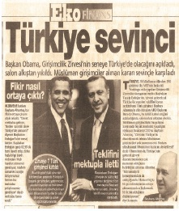

Sonuçta, CNN International, 21.yüzyılın en önemli girişimcilik hareketi olan “Başkanlık Girişimcilik Zirvesi”ni benimle yani bir Türk girişimciyle değerlendirdi. BBC hemen randevu istedi. Bloomberg Washington Stüdyoları beni canlı yayına Beyaz Saray yetkilisi ile beraber davet etti. ABD’nin en önemli radyo kanalı NPR, tam 30 dakika yine benimle yani bir Türk girişimciyle Obama Zirvesi'ni değerlendirdi. Bizim medyada ise haberler birinci sıradan giriyordu. Neticede hem Amerika Birleşik Devletleri hem de Türkiye bir taşla iki kuş vurmuş oldu. 24 Nisan sorunları unutuldu ve 26 Nisan akşamı ibreler Türkiye’ye döndü. ABD Başkanlık Zirvesi’ne Türkiye resmen damgasını vurdu. Namık Tan, bu başarının onuruna Büyükelçiliğimizde verdiği yemek öncesi resepsiyonda şunları söylüyordu.
“Türkiye en az 10 milyon dolarlık bir tanıtım yapmış oldu bu olayla.”
Tüm bunların ülkemize maliyeti ise sıfır dolardı.
Radarları iyi çalışan bir Başbakanlık ekibi, Başbakanımız Erdoğan’ın Türk girişimcisine güvenmesi, alışılmışın dışına çıkarak bu girişimciye mektup teslim etmesi ve bu mektubu Obama’ya elden vereceğim diye ısrar eden bir girişimci...
Sonuçta kazanan Türkiye oldu.
Hayatımda ilk kez gittiğim Washington’da Beyaz Saray, CNN International, Başkan Obama, MPR, Türk Büyükelçiliği, hepsini 2 günde ziyaret ettim. Başkan Obama’dan sonra kravatımı çıkarıp t-shirt’ümü giyerken sırtımdan dünya dolusu yük kalkmış gibi hissettim.
Ülkem için bir girişimci olarak yaptıklarım ortada, ülkemin ne kazandığı da.
Hayatımın en güzel 2 günüydü diyebilirim...
Recep Tayyip Erdoğan’dan şunu öğrendim:
Güvenmesini bileceksin. Mektup olayında iş fikrine odaklandı ve mektubu elçiler yerine bir girişimci ile göndermeyi tercih etti. Alışılmışın dışındaki pratik tavrı ile sonuç aldı. Demek ki kalıpların dışına çıkmasını bileceksin.